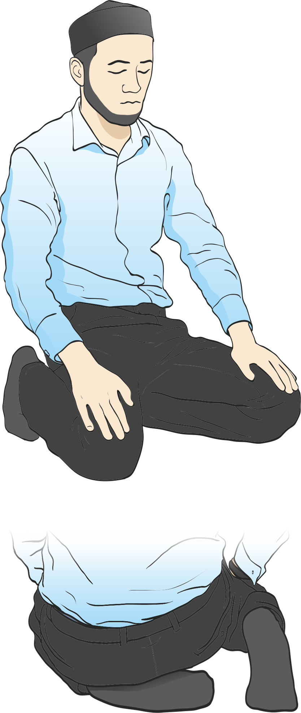

Қалай намаз оқу керек
1. Ниет ету
Алдымен ниет етіңіз. Жүрегіңізбен қай намазды оқып жатқаныңызды және тек Алла разылығы үшін оқитыныңызды айтыңыз.
2. Тахарат алу
Намаз алдында тахарат алу керек. Бұл тазалықты қамтамасыз етеді.

3. Такбир айту
«Аллаһу Әкбар» деп қолыңызды құлақтың деңгейіне дейін көтеріңіз.
4. Фатиха сүресін оқу
Фатиха сүресін және басқа қысқа сүре оқыңыз.Сура «Аль-Фатиха» Аль-хамду лилляхи роббиль-ʼалямин Aр-Рахманир-Рахим Mалики яумид-дин Ийяка наʼбуду уа ийяка наста’ин Ихдинас-сыратоль-мустакым Сыратоль-лязина анʼамта ʼалейхим Гойриль магдуби ʼалейхим уа ляд-дооооллин (Амин – произносится тихо) Сура «Аль-Каусар» Инна а’тойнакаль-каусар Фасолли ли роббика уанхар Инна шаниака хуаль-абтар
5. Рукуғ жасау
«Субхана Раббияль Азим» деп үш рет айтып, беліңізді бүгіңіз , болган сон койттан артка турып Самиʼаллаху лиман хамидах деп сосын Аллаху АКбар деп саждеге тусесыз.
6. Сәжде жасау
Маңдайыңызды және мұрыныңызды жерге тигізіп, «Субхана Раббияль Аъла» деп үш рет айтыңыз.
7. Отурған күйде тәшаһуд айту
«Әттахият» дұғасын оқыңыз.Ат-тахийяту лилляхи уас-соляуату уат-тоййибат Ассаляму ʼаляйка айюхан-набийю уа рахматуллахи уа баракатух Ас-саляму ʼаляйна уа ʼаля ʼибадилляхис-солихин Ашхаду алля иляха илляллаху уа ашхаду анна Мухаммадан абдуху уа расулюх Аллахумма солли ʼаля Мухаммад, уа ʼаля али Мухаммад кама солляйта ʼаля Ибрахима уа ʼаля али Ибрахим иннака хамидум-маджид Аллахумма барик ʼаля Мухаммад уа ʼаля али Мухаммад кама баракта ʼаля Ибрахима уа ʼаля али Ибрахим иннака хамидум-маджид. Роббана атина фид-дунья хасанатан, уа филь-ахирати хасанатан, уа кына ʼазабан-нар
8. Сәлем беру
«Ассаламу алейкум уа рахматуллах» деп оң және сол жаққа қарап айтыңыз.